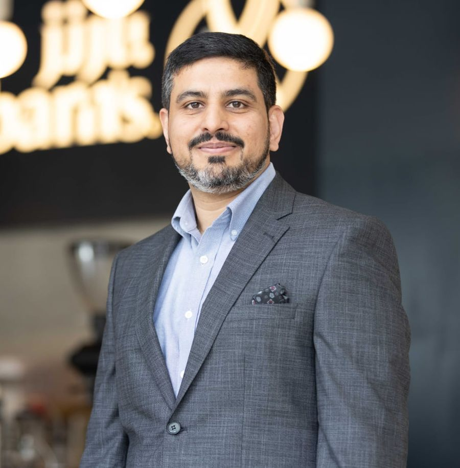
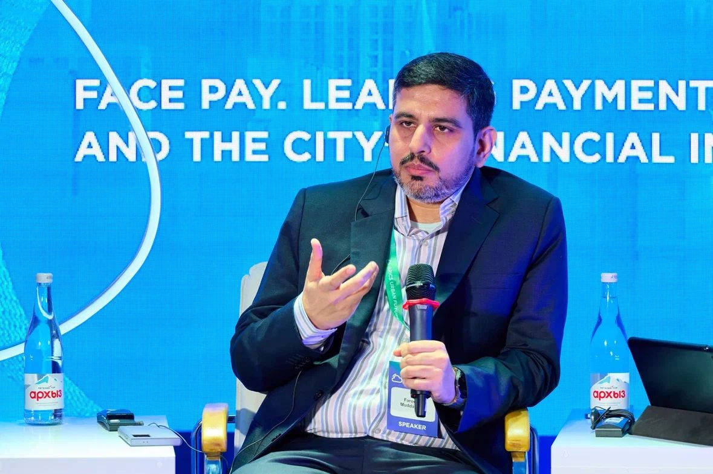
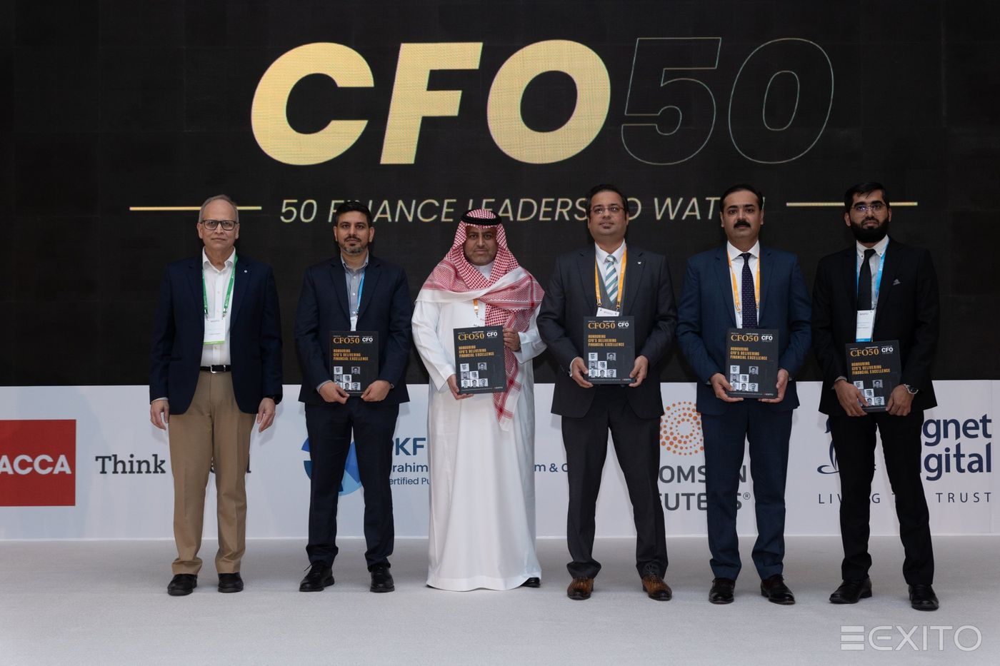
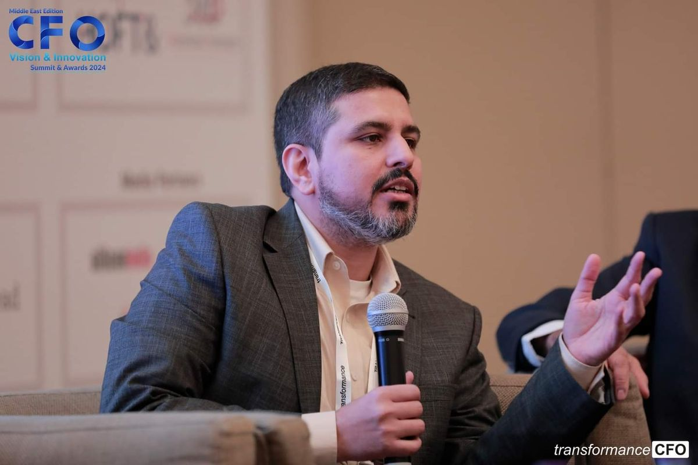
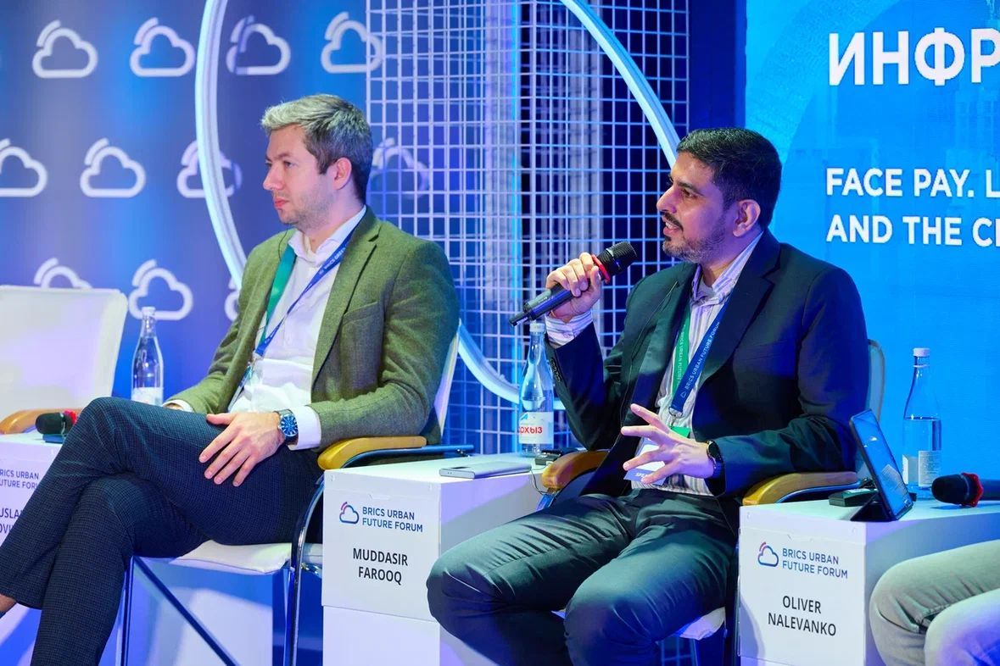
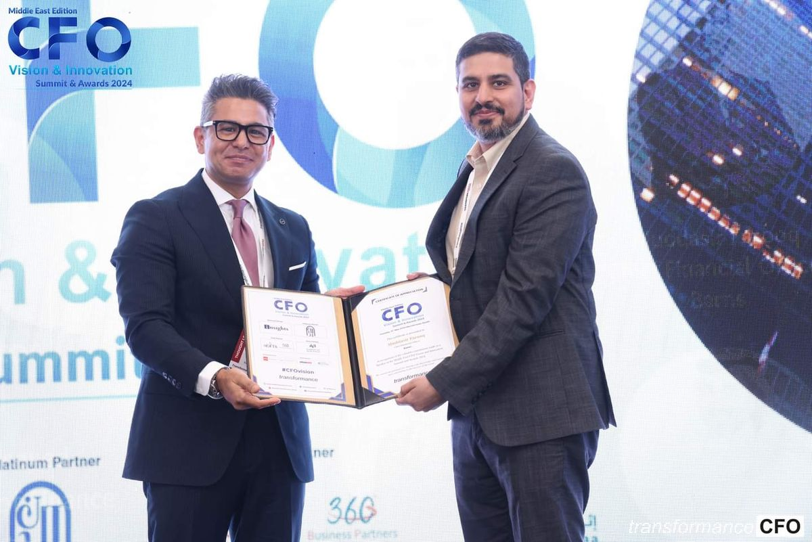
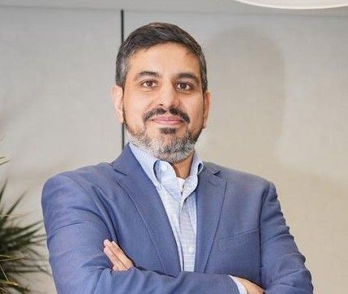

Muddasir Farooq
Chief financial officer and strategic finance leader
Chartered accountant and Certified Internal Auditor with more than 19 years in Big Four audit, NYSE listed multinationals and CFO roles across Saudi Arabia and the GCC. Based in Riyadh.
- ACCA Fellow
- ICAEW
- CIA
- IFRS and US GAAP

About
I want finance to give management a clear answer early, while there is still time to act on it.
I started my career at EY in Riyadh and spent almost six years auditing clients in hospitality, manufacturing, banking and construction. That time gave me a habit I still rely on. I look at the numbers the way an auditor would before anyone else has to.
At Otis and Carrier I worked inside US listed groups, running internal audit and SOX reviews across the Gulf and reporting under both US GAAP and IFRS. I then moved into finance leadership in Saudi manufacturing and retail. As CFO of Barns I reported to the board on a SAR 500 million business with three coffee plants and around 800 outlets, and prepared the company for its IPO process.
Today I am Finance Advisor at Emdad by Elm, where my work covers group consolidation, technical IFRS judgments and the relationship with the external auditors. My longer term goal is to serve on a board.
Experience
Selected results





- Sep 2025 · RussiaBRICS Urban Future Forum, speaker in two sessions: Algorithms in Power: Strategies for the AI Era and Algorithm Based Design: How Technologies Teach You to Be More Creative
- Sep 2024 · RussiaBRICS Urban Future Forum, panellist on Face Pay, payment services and the financial infrastructure of cities
- 2024 · Middle EastCFO Vision and Innovation Summit and Awards, speaker
- Saudi ArabiaCFO50, named among 50 finance leaders to watch
- Oct 2023 · RiyadhCFO panel: The CFO's Evolving Role in Building Future Ready Businesses
- Apr 2023AB Magazine, interview
Expertise
Systems
Qualifications
- ICAEW Chartered Accountant, England and Wales2021
- ACCA Certificate in Digital Innovation in Finance2021
- CIA, Certified Internal Auditor, IIA2019
- ACCA, Association of Chartered Certified Accountants2009
Languages
English, Arabic and Urdu

Get in touch
I am open to conversations about CFO and board roles. For speaking invitations and advisory work, email is the best way to reach me.
Email: muddasirfarooq@gmail.com
Riyadh, Saudi Arabia